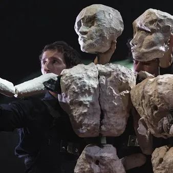

da gio 3 dic a ven 4 dic · dalle 20:30
Teatro Verdi 2026/2027 - Oltre
Come 16+29 persone hanno attraversato il disastro delle Ande Fabiana Iacozzilli porta avanti da anni una ricerca che fonde materiali autobiografici, teatro documentario, teatro di figura e una forte attenzione alla presenza fisica degli interpreti, trasformando storie reali in…
 Indicazioni
Indicazioni
- Costi e prenotazioni
- Costo non indicato · Prenotazione non indicata
- Programma
- Programma da verificare. Apri la fonte ufficiale per orari e possibili aggiornamenti.
- In caso di maltempo
- Nessuna indicazione specifica pubblicata.
- Note
- Acquisito automaticamente dalla fonte.
L’EVENTO
Descrizione completa
Come 16+29 persone hanno attraversato il disastro delle Ande ideazione e regia Fabiana Iacozzilli
drammaturgia Linda Dalisi, Fabiana Iacozzilli
con Andrei Balan, Francesco Meloni, Marta Meneghetti, Giselda Ranieri, Evelina Rosselli, Isacco Venturini, Simone Zambelli
dramaturg Linda Dalisi
scene e progettazione puppets Paola Villani
musiche e suono Franco Visioli
luci Raffaella Vitiello
cura dell’animazione Michela Aiello
aiuto regia Cesare Del Beato
assistenti alla regia volontari Matilde Re e Francesco Savino
traduttrici e interpreti Virginia Gramaglia, Diana Da Rin
produzione Teatro Stabile dell’Umbria in coproduzione con Cranpi, La Fabbrica dell’Attore – Teatro Vascello
con il sostegno e debutto nazionale Romaeuropa Festival con il sostegno del Centro di Residenza dell’Emilia-Romagna L’arboreto – Teatro Dimora | La Corte Ospitale, Teatro Biblioteca Quarticciolo con il contributo di Istituto Italiano di Cultura di Montevideo un ringraziamento a Fivizzano27 e al Comune di Gubbio
un ringraziamento speciale a Biblioteca Nuestros Hijos Fabiana Iacozzilli porta avanti da anni una ricerca che fonde materiali autobiografici, teatro documentario, teatro di figura e una forte attenzione alla presenza fisica degli interpreti, trasformando storie reali in esperienze sceniche sospese fra memoria, corpo e immaginazione. Con Oltre affronta una delle vicende più sconvolgenti del Novecento: il disastro aereo delle Ande del 1972. Lo spettacolo prende avvio dal celebre incidente del volo uruguaiano precipitato sulla Cordigliera delle Ande, in cui sedici sopravvissuti riuscirono a salvarsi dopo settantadue giorni trascorsi nella neve, arrivando a nutrirsi dei corpi dei compagni morti.Iacozzilli e Linda Dalisi hanno incontrato a Montevideo alcuni dei sopravvissuti e le famiglie delle vittime, trasformando testimonianze reali, memorie e documenti storici in una forma scenica che evita la ricostruzione realistica della tragedia per cercarne invece la dimensione più fragile, poetica e perturbante, attraverso l’utilizzo di puppets manovrati a vista dagli interpreti: grandi figure ispirate alle sculture filiformi di Giacometti, che danno corpo a presenze consumate dal gelo, dalla fame e dalla fatica. La scelta del teatro di figura allontana il racconto dalla cronaca e trasforma quei corpi in apparizioni fragili, quasi astratte, permettendo allo spettacolo di muoversi fra esperienza concreta e percezione interiore. La replica del 04 dicembre, ore 20.30, sarà audiodescritta per gli spettatori non vedenti e ipovedenti, grazie alla collaborazione con Centro Diego Fabbri ETS di Forlì, nell’ambito del Progetto Teatro No Limits . Informazioni e biglietti
Biglietteria Teatro Verdi: 0434 247624 / biglietteria@teatroverdipordenone.it
IL PROGRAMMA
Programma e orari
Appuntamenti raccolti dalle fonti elencate. Dove manca un orario, non è ancora disponibile in questa scheda.
Programma pubblicato
- Dal 2026-12-03 al 2026-12-04
INFORMAZIONI UTILI
Prima di partire
- Controllare la fonte prima di partire.
ORGANIZZAZIONE